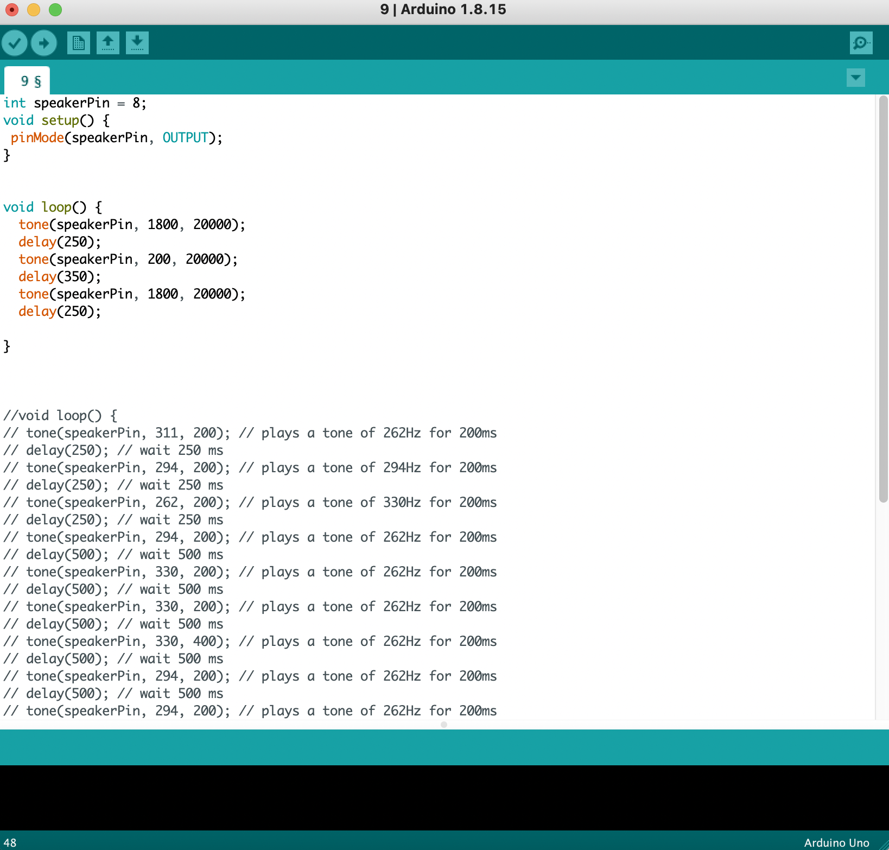

HCI Technologies
HCI Technologies
Arduino opdrachten
Opdracht 3B
Door de delay van beide lampjes op 1000 te zetten gaan de lampjes om en om aan en uit.
Opdracht 4C
Door de gegeven for loop aan te passen hebben we de lampjes om em om langzaam aan en uit laten faden. De int brightness van het ene lampje begint om 0 en de nader op 255, bij de een gaat de lamp steeds meer uit zolang de brightness groter is dan 0, en bij de ander gaat de lamp steeds meer aan zolang de brightness kleiner is dan 256.
Opdracht 6C
De sensorvalue heb ik de maximale waarde van de lampjes gemaakt, 255. Toen heb ik bij het gele lampje 255 - de sensorvalue gedaan zodat die op uit begon en de ander op aan begon. Voor de gele geldt dan hoe groter de sensorvalue hoe meer licht die geeft en voor de groene juist andersom omdat die op aan begint.
Opdracht 7A
Na alles goed aan te sluiten konden we de gegeven code kopieren en plakken.
Opdracht 8
In de void loop hebben we de sensor valu egekoppeld aan de sensor pin, toen hebben we door middel van een map functie de oude waardes omgezet naar de nieuwe waardes, die de maximale en minimale waardes waren die we konden krijgen van de pin. Groen is de maximale waarde 255 - sensor value en geel hoort de minimale waarde 0 + de sensor value te zijn.
Opdracht 9C
Eerst speelt het speakertje een hele hoge toon voor 20000 ms, met een korte delay van 250 totdat hij een lagere waarde van 200 voor 20000 ms afspeelt, en daarna weer de hoge. Zo krijg je een soort taatuu sirene geluid.
Opdracht 11C
Hier konden we na het aansluiten van alle snoeren de code kopieren en plakken. Aan de hand van een if statement gaat de lamp dan aan en uit bij bepaalde waardes van de proximity sensor.
Opdracht 12D
Hier konden we ook de code kopieren en plakken, de serial port heb ik aangepast zodat hij goed was gelinkt aan mijn arduino board.
Opdracht 13B
In het if statement heb ik de waardes LOW en HIGH omgewisseld zodat als de knop wordt ingedrukt het lampje juist uitgaat.
Opdracht 14B
Door met de waardes van de positie in graden te spelen en daarbij aan te passen of de servo dan 1 tikje naar links of juist naar rechts zou gaan, roteert de servo rond en gaat hij dan heen en weer en op verschillende snelheden.